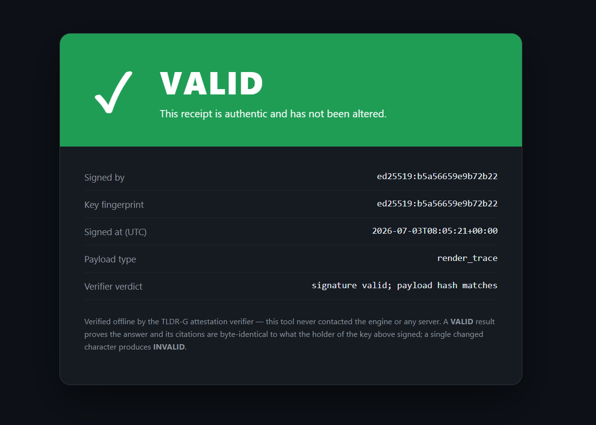
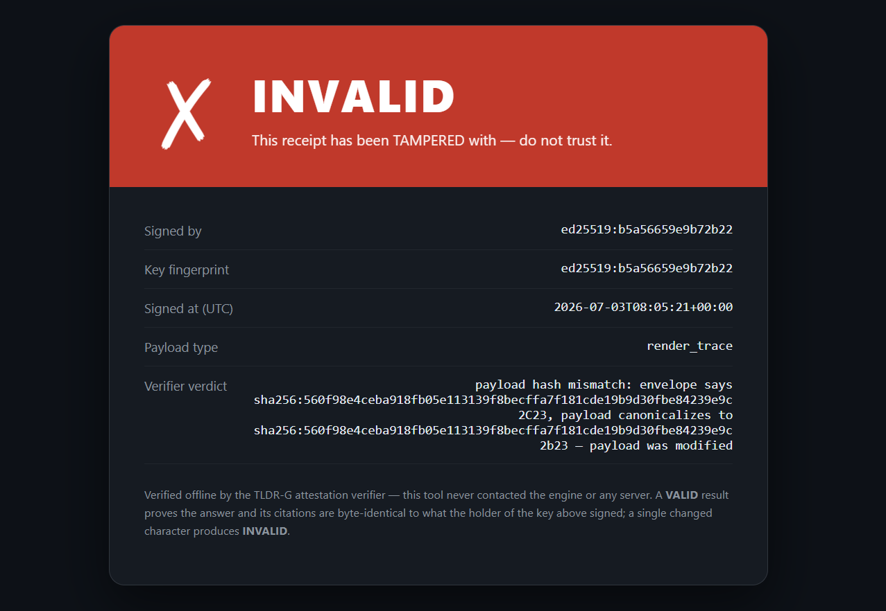

A knowledge rendering engine
Render the context an answer needs.
Don't retrieve chunks.
TLDR-G builds a structured graph of your knowledge and renders exactly the context a question needs — preserving the connections, the provenance, and a hard token budget. It runs on your machine, against the model you choose.
Free engine (closed binary, for now) · Open SDK (Apache-2.0) · On-device · EU-resident by construction
Retrieval loses the truth it was supposed to carry
The dominant pattern — chunk, embed, retrieve top-k, stuff into context — throws away the thing that made the knowledge meaningful: its structure. Connected facts arrive as disconnected fragments. Sources blur into a summary you can't check. And the context window fills with near-duplicates while the one bridging fact is missing.
TLDR-G matches a full-context baseline's answer quality at roughly 88% fewer tokens on legal multi-hop — and 67–88% fewer across benchmarks — because it renders what matters instead of stuffing everything.
How it works
Build a graph, not a pile
Your documents become a two-scale graph of atoms and passages, with typed connections across structural, temporal, causal, and authorial axes.
Render, don't dump
For each question, the engine descends the graph and allocates a hard token budget across what's relevant — verbatim where it matters, summarized where it doesn't. A relevance gradient, not a fixed truncation.
Keep the receipts
Every rendered passage carries verbatim provenance back to its source. A built-in
verify step lets anyone confirm the cited text actually exists in the
original — no trust required.
Proof, not adjectives
- Parity with a full-context baseline at ~88% fewer tokens on legal multi-hop (67–88% across benchmarks).
- On-device, single-file (SQLite) storage — your data never has to leave the machine.
- Verifiable provenance: a runnable
verifystep over signed attestations. - A hard token budget enforced as law — high-signal context is protected, not truncated.
Sovereign by construction
The week this launched, a US government directive cut off foreign access to a leading frontier model overnight, and that model's terms forced 30-day data retention with no enterprise exception. Depending on someone else's cloud for your knowledge layer is a risk that can materialize without warning.
Local-first
The engine runs on your hardware. Your data plane is yours; nothing is sent anywhere by default.
Model-agnostic
The deterministic core needs no LLM at all. Where a model helps, bring your own — local, EU-hosted, or open-weights. No lock-in to any provider.
Inspectable
Provenance is verifiable and the contracts are open. We apply the same transparency we sell — to ourselves.
Free engine. Open SDK. Not open-core.
The engine is free to run, distributed as a compiled binary. The SDK — the integration contracts and the verification surface — is open source under Apache-2.0, so you can build against a stable boundary and verify everything for yourself. We're not open-core: the engine stays closed; the contracts you depend on stay open.
And we're building an honest way for it to get better for everyone: an opt-in, content-free signal about how it rendered — never your data, never one user exposed to another — that improves the shared defaults. It's off by default, inspectable, and won't switch on until its privacy guarantee is provable. We apply the transparency we sell to ourselves.
Get it
Developers — build & verify now
The open SDK: integration contracts + offline verification. Clone, pip install -e .,
run the quickstart (sign → verify → tamper).
The engine — free download
The local Cockpit desktop app + tp-vrg-mcp server + HTTP API. Free to use.
Requirements (v0.1): Windows 10/11 (64-bit). NVIDIA GPU with ≥4 GB VRAM strongly recommended (GTX 1060 6 GB or better) — runs on CPU-only, but ingest and query are ~20–50× slower. 16 GB RAM recommended. ~3 GB of models download once on first launch. macOS and Linux: fast-follow.
A composable developer distribution is on the roadmap — see the Learn page for where this is going.
Get the whitepaper
The full technical paper — the rendering thesis, the substrate and engine, the provenance and sovereignty layer, the engineering discipline, and an honest evaluation. Leave your email and we'll send it over, along with the occasional launch update.
No spam — your email is used only to send the whitepaper and the occasional launch update, and you can unsubscribe anytime.
See the receipt
Every answer carries a signed receipt. Anyone can verify it offline — no trust required. Here is what pass and fail look like.


A 2-minute walkthrough is coming; the verify step is runnable today from the SDK.
Open the hood
The visual demo draws a corpus as terrain you can descend — continent, island, asset, passage — where brightness is how much of a node the engine actually paid for. The question sits unrun until you press it. Then you watch the budget being spent, and afterwards you get to audit the spend: what was admitted, at what resolution, and what the engine reached and declined to pay for.
It runs in the browser — no install, no account, nothing to configure. The corpus in it is synthetic, and every figure on screen is a design concept rather than a benchmark; the demo says so on every response it returns. Open it →